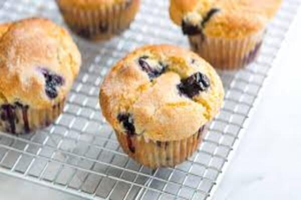

Savory Breakfast Muffins with Spinach and Feta

Ingredients:
- 1 cup wheat flour
- 1 tsp baking powder
- 1/2 tsp baking soda
- 1/2 tsp salt
- 1/4 tsp black pepper
- 2 eggs
- 1/4 cup olive oil
- 1/2 cup milk
- 1 cup finely chopped fresh spinach
- 1/2 cup crumbled brined cheese
- 2 tsp finely chopped sun-dried tomatoes
- 2 tsp finely chopped fresh basil
Instructions:
- Set a muffin tin to 375°F (190°C) and preheat the oven.
- Mix the flour, baking soda, baking powder, salt, and black pepper in a big bowl.
- Beat the eggs in a separate bowl, then whisk in the milk and olive oil.
- Mixing until just mixed, pour the wet components into the dry ingredients.
- Add the chopped spinach, sun-dried tomatoes, feta cheese, and basil and fold gently.
- Using a spoon, pour the batter into each muffin tray, filling it to about 3/4 of the way.
- A toothpick put into the center of the muffins should come out clean after 20 to 25 minutes of baking, or until they are golden brown.
- After letting the muffins cool in the muffin tray for a few minutes, move them to a wire rack to finish cooling.
- Eat It warm or at the required temperature and enjoy!